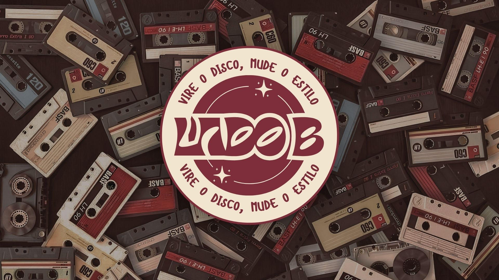
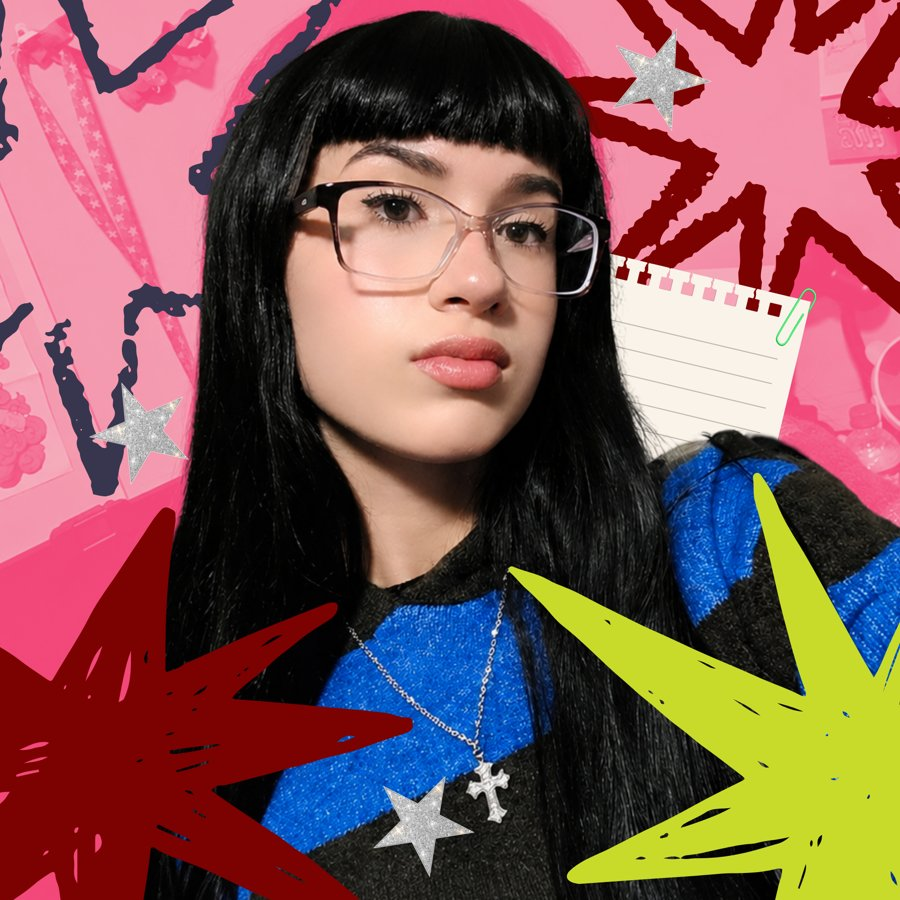
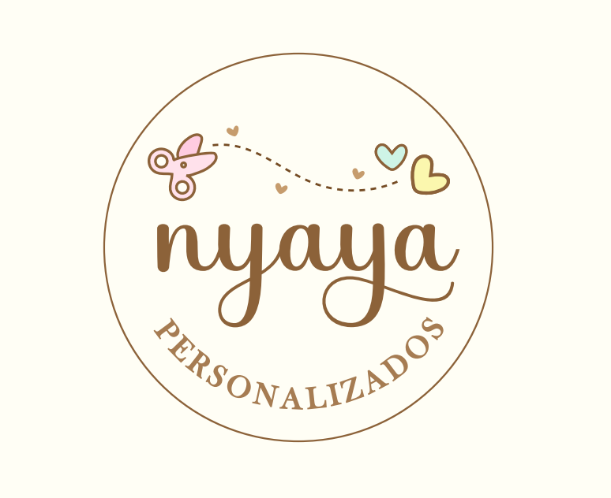
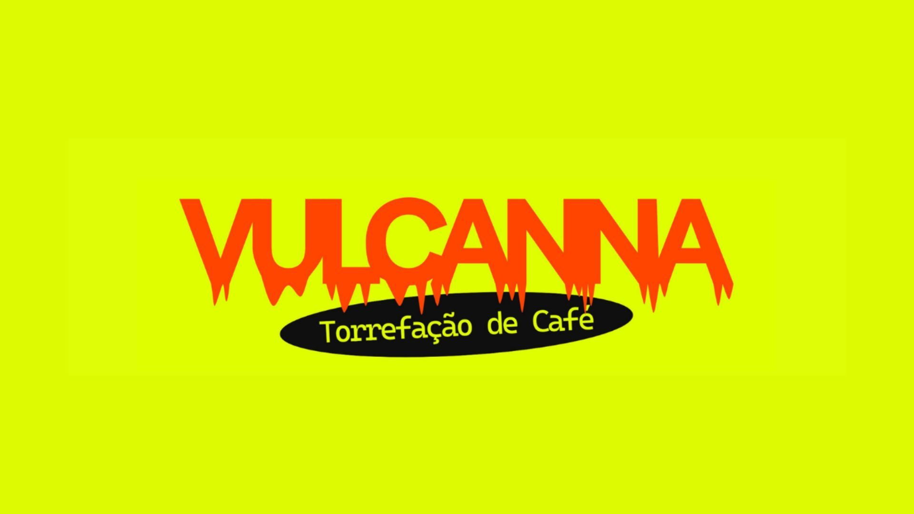
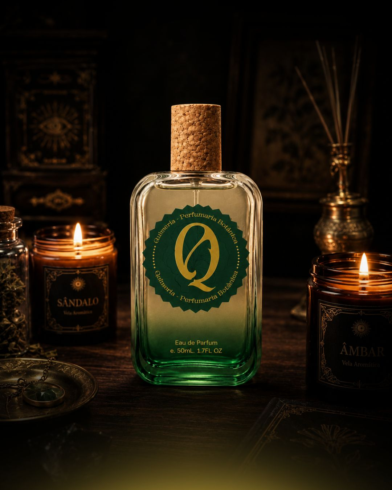

Identidade Visual — Lado B
Branding completo com site para uma loja de moda & decoração para fãs. Dá pra sentir a vibe dos anos 80!
✷ disponível para novos projetos ✷
Designer Gráfica & Desenvolvedora Front-end
Eu transformo marcas tímidas em marcas inesquecíveis — e depois construo o site pra elas mostrarem a cara. Bota a régua e o compasso na gaveta, aqui quem manda é a criatividade. 💥
↳ resposta rápida, sem enrolação

essa sou eu! 💕
// sobre mim
Sou a Mila, e a minha missão é simples: pegar a bagunça de ideias que tá na sua cabeça e transformar numa identidade visual que gruda na memória, e num site que carrega essa mesma energia até a última rolagem de tela!
Trabalho com branding e social media há 2 anos, e hoje me aventuro no UI/UX, sempre com um pé no design e outro no código. Amo trabalhar com pessoas autênticas: entrego uma marca que funciona, vende e ainda é divertida de olhar. Bora?
— com carinho (e um pouco de atitude), Mila
minhas ferramentas & superpoderes
// portfólio
Uma seleção do que já rolou por aqui. Cada um com um problema, uma ideia e um resultado sem enrolação.

Branding completo com site para uma loja de moda & decoração para fãs. Dá pra sentir a vibe dos anos 80!

Landing page responsiva com loja integrada, pensada pra converter visita em venda sem perder a fofura da marca.

Branding para uma marca de torefação de café artesanal fictícia

Branding para marca fictícia de perfumes botânicos & naturais

Liverys/plotagem para modelos 3d de carros no Assetto Corsa. Definitivamente não parece algo que eu faria, mas eu faço!

Site minimalista (mas com atitude) pra fotógrafa expor o trabalho sem distrair do que importa: a imagem.
// vamos conversar?
Me chama nas redes ou manda um e-mail. Prometo responder mais rápido que café coado.
P.S: se você chegou até aqui rolando a tela, já sei que curtiu. Bora transformar essa ideia em projeto? ✷